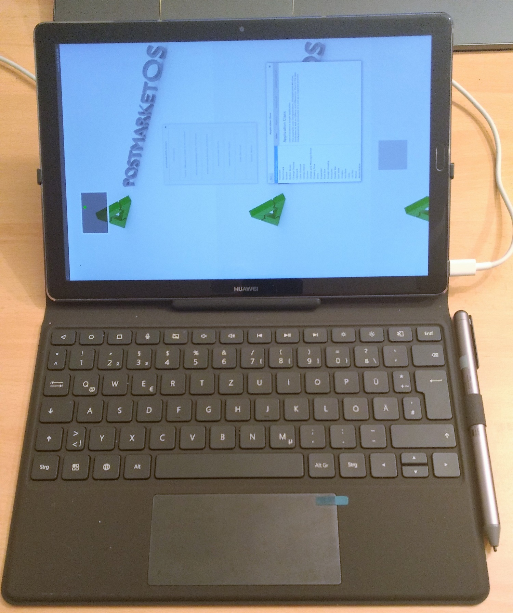

Huawei Mediapad M5 pro (huawei-cameron)
|
 Huawei Mediapad M5 pro with accessory keyboard-case and stylus | |
| Manufacturer | Huawei |
|---|---|
| Name | Mediapad M5 pro |
| Codename | huawei-cameron |
| Released | 2018 |
| Category | testing |
| Original software | Android |
| Original version | 8 Oreo (EMUI 8.0) |
| Hardware | |
| Chipset | HiSilicon Kirin 960 |
| CPU | Cortex-A73/-A53 |
| GPU | ARM Mali-G71 MP8 |
| Display | 10.8 inch 16:10, 2560 x 1600 pixel, native pen support |
| Storage | 64 GB eMMC Flash |
| Memory | 4096 MB |
| Architecture | aarch64 |
{kind=link}
| USB Networking |
Works
|
|---|---|
| Flashing |
Broken
|
| Touchscreen |
Works
|
| Display |
Works
|
| WiFi |
Broken
|
| FDE | |
| Mainline |
Broken
|
| Battery | |
| 3D Acceleration | |
| Audio | |
| Bluetooth | |
| Camera | |
| GPS | |
| Mobile data | |
| SMS | |
| Calls | |
| USB OTG | |
| NFC | |
| Accelerometer | |
|---|---|
| Magnetometer | |
| Ambient Light | |
| Proximity | |
| Hall Effect | |
| Barometer | |
| Power Sensor | |
| Camera Flash | |
|---|---|
| Keyboard | |
| Touchpad | |
| USB-A | |
| HDMI/DP | |
| Ir TX | |
| Ir RX | |
| Stylus | |
| Haptics | |
| Ethernet | |
| FOSS bootloader | |
Contents
Contributors
- JohnBergago
Device owners
How to enter flash mode
With power off, press power und volume-down at the same time, with the usb-cable plugged in.
How to flash
As Huawei changed the partition layout, there is no boot partition anymore. Instead there is a ramdisk and a seperate kernel partition. In order to create the correct images the following steps need to be done:
- Get mkbootimg and unpackbootimg i.e. from here.
- You can extract the kernel-image and ramdisk from the created boot.img with unpackbootimg.
$ # copy created boot image to current directory $ cp ~/.local/var/pmbootstrap/chroot_rootfs_huawei-cameron/boot/boot.img-huawei-cameron . $ # extract the created boot.img $ mkdir pmos-boot-huawei-cameron $ unpackbootimg -i boot.img-huawei-cameron -o pmos-boot-huawei-cameron/ $ # copy created boot image to current directory $ cp ~/.local/var/pmbootstrap/chroot_rootfs_huawei-cameron/boot/boot.img-huawei-cameron . $ # extract the created boot.img $ mkdir pmos-boot-huawei-cameron $ unpackbootimg -i boot.img-huawei-cameron -o pmos-boot-huawei-cameron/
- Use the extracted files in the following steps.
- Create ramdisk image:
$ # create new ramdisk image with empty kernel (empty.file size is 0) $ ./android-unpackbootimg/mkbootimg.py --kernel empty.file --ramdisk pmos-boot-huawei-cameron/boot.img-huawei-cameron-ramdisk.gz --cmdline 'buildvariant=user' --os_version 8.0.0 --os_patch_level 2018-06-05 -o pmos-cameron.ramdisk.img
- Create kernel image:
$ # kernel (with empty.file size is 0): $ mkbootimg.py --kernel pmos-boot-huawei-cameron/boot.img-huawei-cameron-zImage --ramdisk empty.file --cmdline 'loglevel=4 initcall_debug=y page_tracker=on slub_min_objects=16 unmovable_isolate1=2:192M,3:224M,4:256M printktimer=0xfff0a000,0x534,0x538 androidboot.selinux=enforcing buildvariant=user' --base 0x0 --kernel_offset 524288 --ramdisk_offset 130023424 --second_offset 15728640 --tags_offset 0x7a00000 --os_version 8.0.0 --os_patch_level 2018-12 -o pmos-cameron.kernel.img
- Flash ramdisk and kernel with fastboot:
$ fastboot flash kernel pmos-cameron.kernel.img $ fastboot flash ramdisk pmos-cameron.ramdisk.img
Additional Kernel Configuration
OASES
About
OASES stands for Open Adaptive Security Extensions. Its a Tradmark of Baidu and seems to have something todo with adaptive kernel live-patching. For now there were no disadvantages from disabling it.
-> Device Drivers
-> Huawei Platform Drivers
-> Huawei platform drivers support (HUAWEI_PLATFORM [=y])
In Order to compile the kernel OASES had to be disabled.
Additional Info
The display brightness can be set by writing a value between 0 and 9960 to /sys/class/leds/lcd_backlight0/brightness.
$ sudo -i
# echo 1024 > /sys/class/leds/lcd_backlight0/brightness
For now the backlight is completely dark when the system boots.